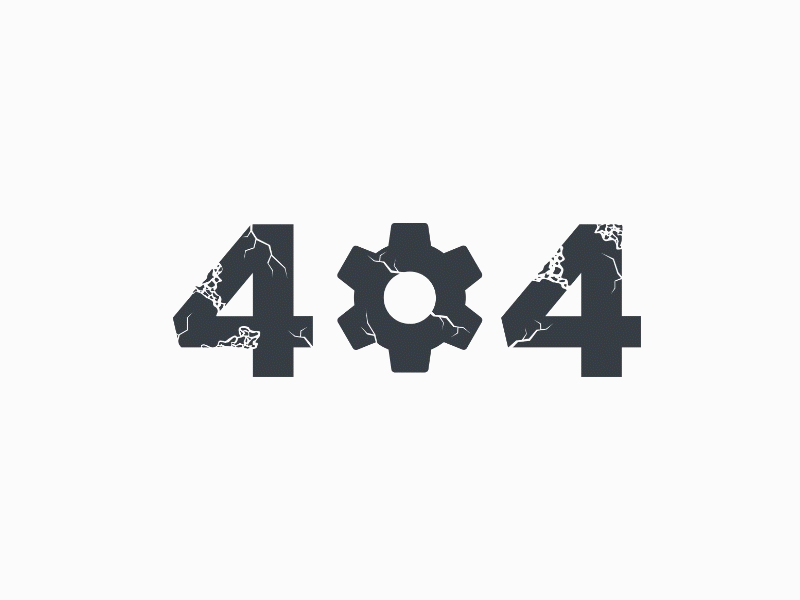

Главное
Меню
Место Контакты
К сожалению, запрашиваемая Вами страница не найдена..

Почему?
Ссылка, по которой Вы пришли, неверна.
Вы неправильно указали путь или название страницы.
Страница была удалёна со времени Вашего последнего посещения.
Для продолжения работы с сайтом Вы можете воспользоваться формой поиска по сайту:
..или перейти на:
Главную страницу сайта.
Меню